Đặt Xe – hệ thống đặt năng lực giao hàng
Portal thay cho bảng tính Đặt xe. CS đặt đơn theo ngày bốc và kho, Logistics khai báo xe và xếp xe, Sales và quản lý theo dõi số liệu. Mọi người cùng nhìn một dữ liệu và thấy thay đổi của nhau sau tối đa 30 giây.
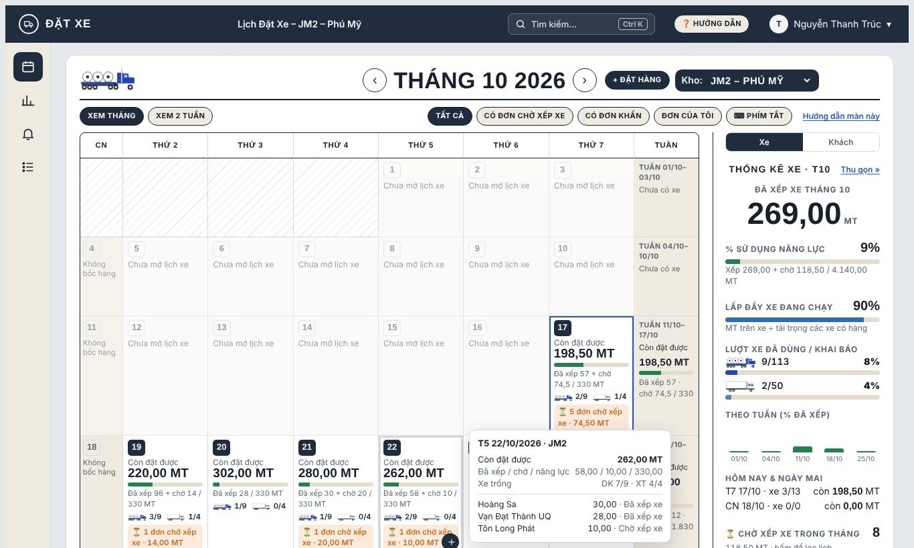
Chọn hướng dẫn theo vai trò
Bấm ? ở bất kỳ màn hình nào để xem phím tắt. Bấm Hướng dẫn màn này để mở đúng mục của màn đang dùng.
Đăng nhập
- Mở truck-capacity-portal.pages.dev.
- Ô đăng nhập: gõ tên trước dấu @ (ví dụ
hung.phan), hệ thống tự thêm @bluescope.com. Email khác (Gmail…) thì gõ đủ. - Mật khẩu ban đầu do Admin cấp. Lần đầu vào, mở Hồ sơ (bấm tên ở góc trên phải) để đổi mật khẩu.
Quên mật khẩu: bấm "Quên mật khẩu?" ở màn đăng nhập, hệ thống gửi link đặt lại vào email.
Xác thực 2 lớp (bắt buộc với Admin): cài ứng dụng Google Authenticator / Microsoft Authenticator, quét mã QR lần đầu, sau đó mỗi lần đăng nhập nhập mã 6 số.
Ứng dụng giữ phiên đăng nhập nhiều tuần; dùng máy chung thì nhớ Đăng xuất (menu tên).
Vòng đời một đơn
Sơ đồ quy trình tự chạy: mở quy-trinh.html trên Portal.
Tóm tắt dạng danh sách: đi từ trên xuống theo luồng chính. Dòng ↳ là nhánh rẽ tại bước đó; màu nhãn giống nhãn trạng thái trong app.
- Lưu tạm↳ Đã hủy tự hủy khi quá ngày bốc 2 ngàyCS bấm Gửi Logistics – bắt đầu trừ năng lực
- Chờ xếp xe↳ Đề nghị đổi ngày Logistics hết chỗ → CS chọn ngày mới, Đặt lại↳ Từ chối CS đặt lại được, giữ mã đơn↳ Đã hủy CS hủy, chọn lý doLogistics xếp xe
- Đã xếp xe↳ Chờ xếp xe khi sửa đơn – xe được gỡ↳ Hủy quá cận ngày hủy sau giờ chốtCS dán danh sách cuộn
- Đã xác nhận giao hàng↳ Đã XN giao hàng · Chờ xếp xe có cuộn nhưng chưa có xe (đơn khẩn, ngày bốc đã qua) – Logistics được báo xếp xe ngayLogistics bấm Đã bốc hàng
- Đã bốc hàng↳ Đã xếp xe Mở lại để điều chỉnh khi xe chưa xuất phát↳ Có cuộn không lên xe: CS Tách đơn hoặc Không giao phần còn lạiTài xế bấm Bắt đầu chạy trên link xe (hoặc Logistics bấm)
- Đang giao↳ Giao không thành công có lý do; CS sửa và Đặt lại → Chờ xếp xeTài xế xác nhận Đã giao kèm ảnh (hoặc Logistics bấm)
- Đã giao
- Lưu tạm chưa trừ năng lực giao. Quá giờ chốt hệ thống nhắc CS.
- Từ chối = nhu cầu bị mất nếu CS không đặt lại.
- Hủy quá cận ngày: hủy đơn đã xếp xe sau giờ chốt – xe trống đột xuất.
- Năng lực, giờ chốt và xếp xe tính theo ngày bốc.
Quy tắc chung
- Đơn vị: MT (metric tấn).
- Giờ chốt xe (mặc định 16:00): đặt sau giờ chốt cho ngày hôm sau = đơn khẩn 🚨; hủy đơn đã xếp xe sau giờ chốt = Hủy quá cận ngày.
- Ngày nghỉ (Chủ nhật, lễ): chỉ đặt được khi Logistics khai báo xe kèm lý do; ô lịch có cảnh báo đỏ.
- Kho: JM2 – Phú Mỹ, JD8 – Hải Phòng, JD9 – Cửa Lò. Mỗi khách có kho mặc định nhưng đặt được ở mọi kho.
- Sửa trùng: nếu người khác vừa sửa đơn bạn đang mở, hệ thống báo "Đơn … vừa được X cập nhật" và tải lại bản mới – kiểm tra rồi làm lại.
- Thông báo: chuông 🔔 trên thanh bên trái; email theo mức chọn trong Hồ sơ (Tất cả / Chỉ việc gấp / Không).
Lịch đặt xe
- Mỗi ô ngày: Còn đặt được (số lớn), thanh năng lực (xanh < 80% · cam ≥ 80% · đỏ đầy), đã xếp / chờ / năng lực, số xe DK / XT đã dùng.
- Nhãn chỉ hiện khi Gần đầy / Đã đầy. "⏳ n đơn chờ xếp xe" = đơn đã giữ chỗ chưa có xe.
- Bấm 1 lần vào ô: hiện menu nhanh theo quyền của bạn: Yêu cầu đặt hàng ngày này, Đặt hàng (CS), Xem yêu cầu, Mở chi tiết ngày / đội xe. Ở chế độ Tất cả kho, bấm vào dòng của một kho để menu theo kho đó. Chỉ có một lựa chọn (ví dụ Logistics) thì vào thẳng chi tiết ngày.
- Bấm đúp vào ô: vào thẳng chi tiết ngày / đội xe. Bàn phím: chọn ô rồi Enter mở chi tiết ngày, Y tạo yêu cầu, N đặt hàng.
- Rê chuột lên ô để xem nhanh khách, MT, trạng thái và xe trống.
- Cột Tuần: còn đặt được của cả tuần.
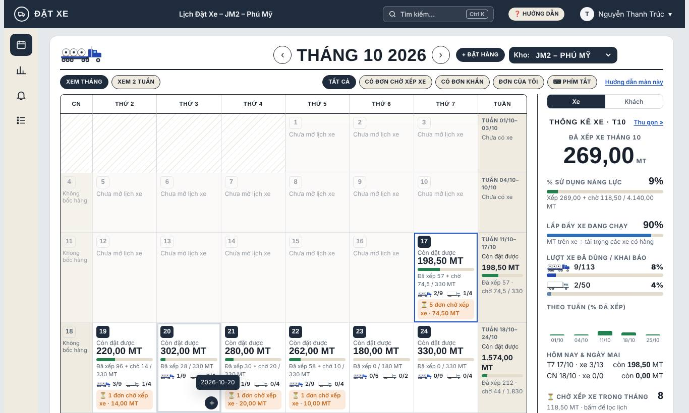
Lọc và kiểu xem
- Có đơn chờ xếp xe / Có đơn khẩn / Đơn của tôi: làm mờ các ngày không liên quan.
- Ô Kho → Tất cả kho: mỗi ô hiện từng kho, bấm dòng kho để mở ngày của kho đó.
- Xem 2 tuần: hiện tên khách trong từng ngày.
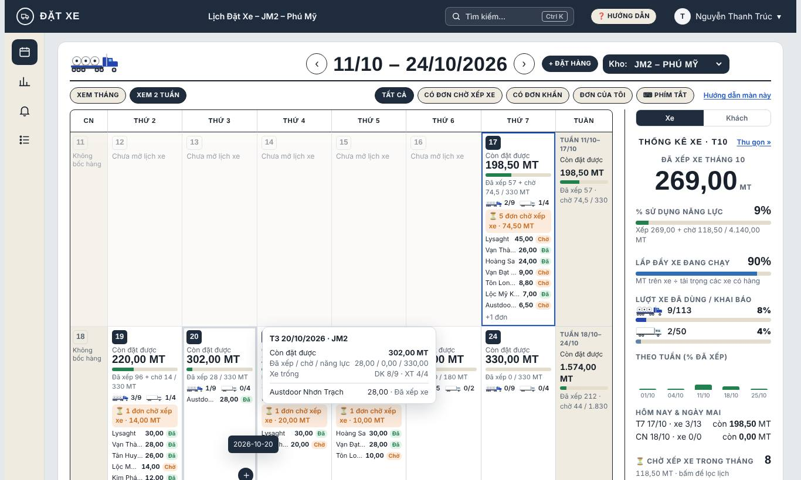
Khung bên phải: tab Xe (sử dụng năng lực, lấp đầy xe, ngày cao điểm, xe non tải…) và Khách (bấm từng dòng để xem danh sách đơn). Nút Thu gọn » để lịch rộng hơn.
Việc hằng ngày (CS)
- Sáng: mở Thống kê › CS – xem Cần đổi ngày, Ngày bốc đã qua nhưng chưa chốt, Lưu tạm sắp đến ngày.
- Nhận yêu cầu khách → Đặt hàng (lưới nhiều dòng).
- Đơn còn Lưu tạm → Gửi Logistics trước giờ chốt.
- Khi có picking list từ ERP → Xác nhận giao hàng.
- Theo dõi chuông 🔔: đơn bị từ chối / đề nghị đổi ngày cần báo khách.
Đặt hàng
Bấm + Đặt hàng (hoặc phím N). Khung mở to gần toàn màn hình; kéo góc dưới phải để co giãn, A− / A+ phóng to cả bảng.
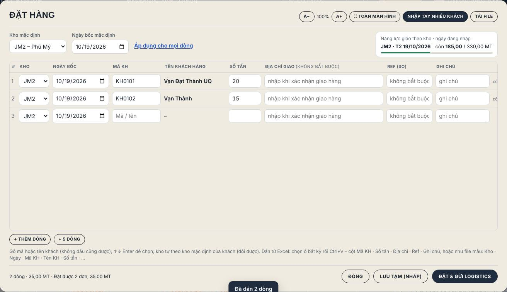
- Chọn Kho và Ngày bốc mặc định (áp dụng cho mọi dòng).
- Cột Mã KH: gõ mã hoặc tên (không dấu cũng được), ↑↓ Enter để chọn. Kho tự theo kho mặc định của khách.
- Nhập Số tấn. Địa chỉ giao không bắt buộc lúc đặt (nhập khi xác nhận giao hàng). Địa chỉ mới sẽ được hỏi có lưu vào hồ sơ khách không.
- Dán từ Excel: chọn một ô rồi Ctrl+V (cột Mã KH · Số tấn · Địa chỉ · Ref · Ghi chú, hoặc theo file mẫu). Tab Tải file để tải CSV/XLSX.
- Khung bên phải hiện năng lực còn lại theo kho · ngày đang nhập.
- Lưu tạm (Nháp) (Ctrl+Enter) – chưa trừ năng lực; hoặc Đặt & gửi Logistics (Ctrl+Shift+Enter) – giữ chỗ luôn.
Dòng lỗi (khách không có, vượt năng lực, ngày chưa khai báo xe) tô đỏ kèm lý do. Sau khi gửi, bấm Sửa các dòng lỗi để mở lại lưới chỉ với các dòng chưa được nhận.
Gửi Logistics
Đơn Lưu tạm chưa trừ năng lực. Mở đơn → Gửi Logistics (phím L), hoặc ở Danh sách booking tab Lưu tạm bấm Gửi Logistics các nháp của tôi. Hệ thống kiểm tra ngày, kho, xe đã khai báo và năng lực còn lại.
Xử lý một đơn
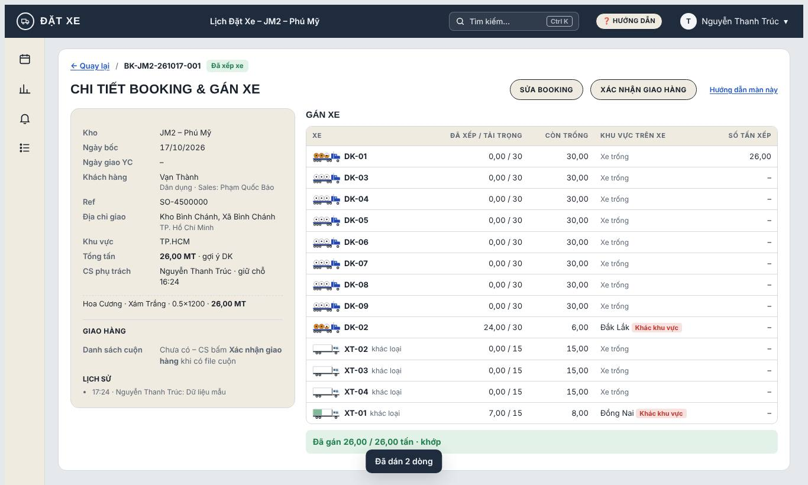
- Sửa (E): đổi số tấn, ngày, ref, ghi chú. Đơn đã xếp xe sửa sẽ quay về Chờ xếp xe (xe được gỡ).
- Đổi ngày: chọn lý do và bên yêu cầu (Khách / CS / Logistics); số lần đổi được đếm.
- Hủy: chọn lý do. Hủy đơn đã xếp xe sau giờ chốt = Hủy quá cận ngày.
- Đề nghị đổi ngày từ Logistics: báo khách, chọn ngày mới rồi Đặt lại.
- Đổi kho: chỉ khi kho của đơn đã ngừng dùng; đơn về Lưu tạm.
- Cờ khẩn (U, Admin): đặt / bỏ cờ khẩn kèm lý do.
Xác nhận giao hàng
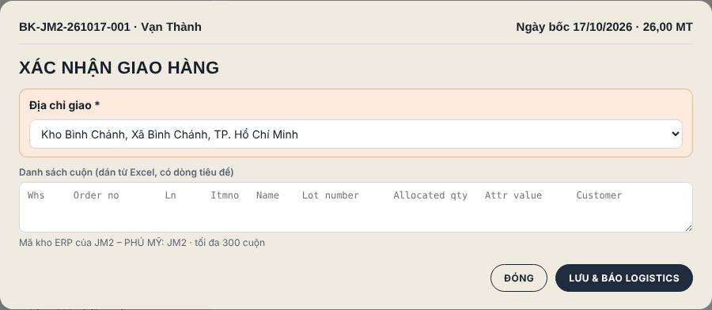
- Mở đơn → Xác nhận giao hàng (D).
- Chọn địa chỉ giao (bắt buộc).
- Dán danh sách cuộn từ Excel/ERP, có dòng tiêu đề: Whs · Order no · Ln · Itmno · Name · Lot number · Allocated qty · Attr value · Customer (tối đa 300 cuộn).
- Hệ thống so tổng cuộn với số tấn: thiếu → chọn Tách đơn (phần còn lại thành đơn -N) hoặc Không giao phần còn lại; dư → tick cập nhật số tấn.
- Cảnh báo Customer / Whs khác mã ERP: kiểm tra rồi bấm "Đã kiểm tra – vẫn lưu".
Ngày bốc đã qua mà mới xác nhận: bắt buộc nhập Ngày giao thực tế (từ hôm nay). Đơn chuyển sang ngày đó, gỡ xe cũ, thành Đã XN giao hàng · Chờ xếp xe, Logistics được báo xếp xe gấp. Không tính vào số lần đổi ngày.
Thông báo / email CS nhận
- Đơn bị từ chối, đề nghị đổi ngày (cần báo khách).
- Nháp quá giờ chốt chưa gửi; nháp bị tự hủy.
- Bốc thiếu cần xử lý phần còn lại.
- Khi CS nghỉ phép: chọn người nhận thay trong Hồ sơ.
Việc hằng ngày (Logistics)
- Khai báo xe cho các ngày tới.
- Mở Chờ xếp xe (G A) hoặc lọc lịch Có đơn chờ xếp xe → xếp xe.
- Ưu tiên đơn 🚨 khẩn và đơn "Đã XN giao hàng · Chờ xếp xe".
- Cuối ngày: bốc hàng, đóng xe, cập nhật đang giao / đã giao.
- Xem Thống kê › Logistics: lấp đầy 14 ngày tới, thời gian xác nhận.
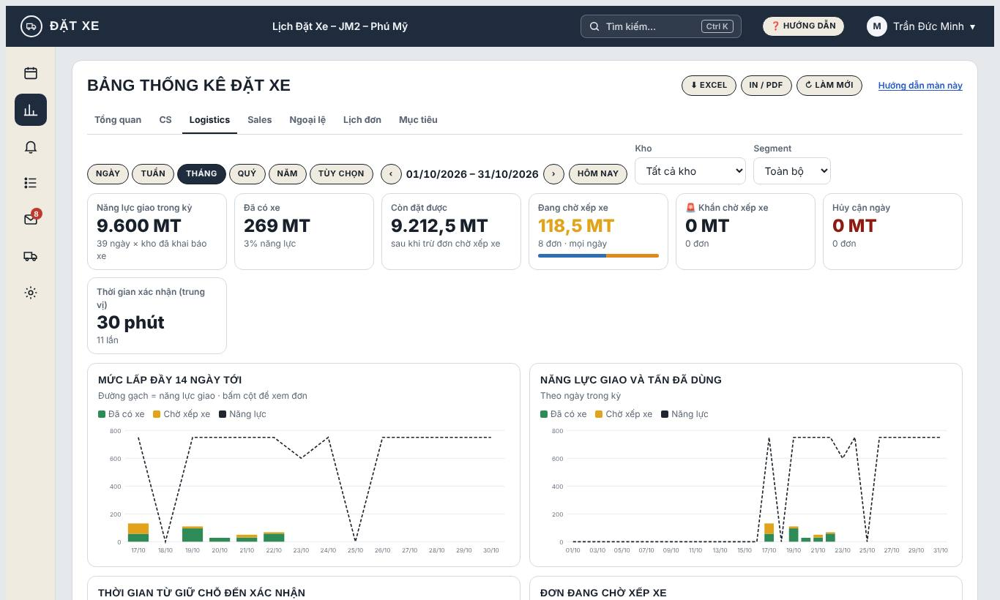
Khai báo xe
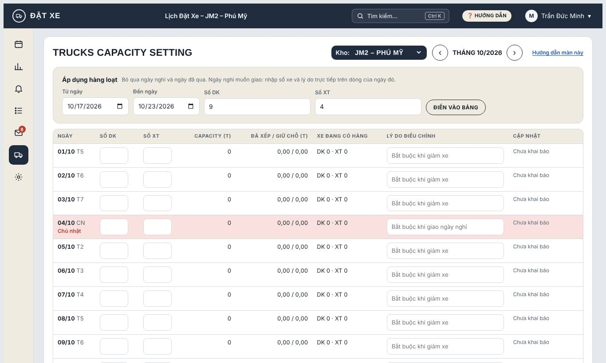
- Nhập số đầu kéo (DK) và xe thùng (XT) cho từng ngày, từng kho. Năng lực = số xe × tải trọng chuẩn (Cấu hình).
- Giảm xe phải nhập lý do. Không giảm dưới số xe đang chở hàng.
- Ngày nghỉ muốn giao: khai báo xe kèm lý do.
- Đổi tải trọng một xe trong ngày: mở xe ở Chi tiết ngày → sửa tải trọng (có lý do).
Xếp xe
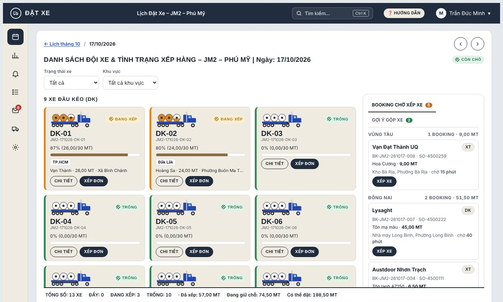
Chi tiết ngày hiện thẻ từng xe: biểu tượng tô màu theo tải (đầu kéo: 3 cuộn; xe thùng: thùng), % tải, khách trên xe, khu vực. Bên phải là danh sách Booking chờ xếp xe và Gợi ý gộp xe theo khu vực.
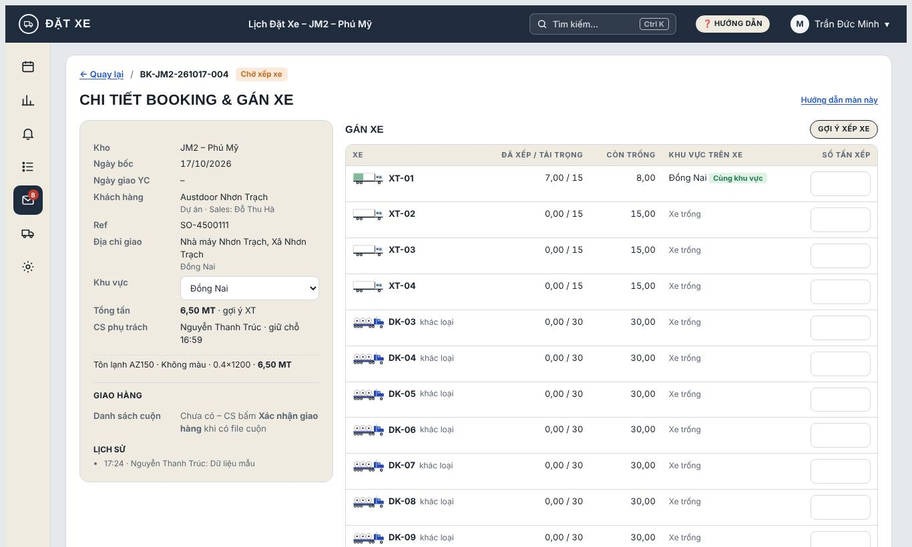
- Mở booking chờ → bảng Gán xe: nhập số tấn cho từng xe, hoặc Gợi ý xếp xe (X).
- Xe khác khu vực / vượt tải: hệ thống cảnh báo, cần lý do override.
- Bấm Xác nhận → đơn thành Đã xếp xe, CS được báo.
- Không xếp được: Từ chối hoặc Đề nghị đổi ngày kèm lý do.
Trên thẻ xe: bấm Xếp đơn để chọn đơn chờ cho đúng xe đó. Phím J / K đi qua các đơn chờ trong ngày.
Kéo thả booking vào xe
Ở màn chi tiết ngày (đội xe), danh sách Booking chờ xếp xe bên phải kéo thả được vào thẻ xe bên trái.
- 💡 Gợi ý trên một booking: xe được gợi ý có viền chạy quanh, nhãn "+MT · khách → %" và thanh tải trọng sọc tím xem trước. Bấm ✓ Đồng ý để xếp và xác nhận, ✕ Bỏ để bỏ. Phím: chọn booking, G gợi ý, Enter đồng ý.
- 💡 Gợi ý tất cả: gợi ý cho mọi booking chờ (theo thứ tự chờ lâu nhất), rồi Đồng ý tất cả.
- Tự kéo: nắm booking kéo sang xe. Viền xanh = đủ chỗ, cam = còn chỗ nhưng khác loại xe / khu vực / quá số điểm giao, đỏ = vượt tải trọng, xám = xe đã đóng / đã chạy. Thả vào xe xanh: booking bay vào xe, xếp ngay.
- Thả vào xe cam / đỏ: hộp hỏi Xếp phần vừa (phần còn lại chờ xếp tiếp), Vẫn xếp toàn bộ (bắt buộc ghi lý do, ghi nhật ký) hoặc Hủy. Thả ra ngoài hoặc Esc: booking bay về chỗ cũ.
- Xếp đủ tấn thì booking được xác nhận luôn. Thanh dưới cùng có Hoàn tác trong 7 giây.
- Điện thoại / máy tính bảng: giữ ngón tay trên booking ~0,3 giây rồi kéo. Nút Xếp xe cũ vẫn dùng được.
Gợi ý xe: thứ tự ưu tiên
- Xe đang chở cùng khu vực, chở vừa cả đơn (đúng loại trước, rồi khác loại — đơn nhỏ ghép đầu kéo đang chạy cùng tuyến tốt hơn mở xe thùng mới).
- Xe đang chở khu vực lân cận.
- Xe trống đúng loại (DK khi đơn > ngưỡng, XT khi nhỏ hơn), rồi khác loại.
Luôn tôn trọng số điểm giao tối đa / xe. Đơn chưa có khu vực: hệ thống đoán từ địa chỉ (ví dụ "Củ Chi, Hồ Chí Minh" → TP.HCM) và hiện nút Gán khu vực trên thẻ đơn; bấm là lưu cho địa chỉ đó, lần sau tự có.
Bốc hàng và giao hàng
- Đã bốc hàng: tick các cuộn đã lên xe; cuộn không lên phải ghi chú → CS xử lý phần bốc thiếu.
- Đang giao: nhập giờ dự kiến tới. Đã giao / Giao lỗi (có lý do).
- Đóng xe: khóa không xếp thêm (ghi tải thực tế, lý do); mở lại nếu cần.
- Theo xe (hộp chi tiết xe → Bốc / giao theo xe): ✓ Bốc xong cả xe mở danh sách các đơn (mặc định đã chọn; ⚠ đơn còn hàng trên xe khác không tự chọn; ⛔ đơn chưa có danh sách cuộn không chọn được; đơn bốc thiếu bấm Bốc từng đơn). 🚚 Xe xuất phát chuyển các đơn đã bốc sang Đang giao, nhập giờ dự kiến tới (không bắt buộc). ✓ Đã giao / ✗ Không thành công làm theo từng điểm giao, xong quay lại đúng hộp xe. Mỗi đơn vẫn qua đủ kiểm tra, thông báo và nhật ký như làm từng đơn.
- ↩ Mở lại để điều chỉnh: đơn Đã load mà xe chưa xuất phát (còn ở nhà máy) → bấm ↩ Mở lại trên phần hàng, ở khung Bốc / giao theo xe (cả xe), hoặc trong chi tiết booking. Bắt buộc lý do; đơn về Đã xếp xe để sửa / chuyển xe rồi bốc lại; ghi nhật ký, báo CS + Sales, không báo khách. Khi xe đã có đơn Đang giao thì không mở lại được (dùng Giao không thành công).
- Xe đã chạy: không sửa phần hàng đơn đã đi, khóa tải trọng (biển số / tài xế / SĐT vẫn sửa được), ẩn Chốt xe; nhãn "Trống x MT · không nhận thêm".
Trạng thái chuyến trên thẻ xe
- Mức lấp đầy: Trống / Còn chỗ x MT / Đầy / Quá tải.
- Chuyến (theo các đơn trên xe): Chờ bốc → Đang bốc 1/3 đơn → Đã bốc xong → Đang giao → Đã giao xong (✓); Giao lỗi nếu có đơn giao không thành công. Xe bốc nhiều đơn vẫn xếp thêm được khi đang bốc.
- 🔒 Đã chạy: có đơn trên xe Đang giao / Đã giao / Giao lỗi → không xếp thêm, phần còn trống không tính vào "Còn đặt được". 🔒 Đã chốt: Logistics chốt xe – ngừng nhận đơn mới (không phải xe đã chạy; vẫn Chờ bốc / Đang bốc bình thường). Bộ lọc "Trạng thái xe" có thêm các mục Chuyến; dòng tổng cuối trang đếm theo chuyến.
Nhắc "Chưa xác nhận giao"
- Đơn Đã load / Đang giao đã qua ngày bốc (hoặc quá giờ dự kiến đến 6 tiếng) mà chưa bấm Đã giao / Giao không thành công: Logistics kho đó nhận Nhắc việc mỗi ngày một lần (7h–20h); quá 2 ngày báo thêm Admin. Mốc chỉnh trong Cấu hình → Ngưỡng & tải trọng.
- Các đơn này nằm trong Cần xử lý của Logistics và tab Ngoại lệ → Chưa xác nhận giao của Thống kê.
- Khi Admin tạm bỏ bắt buộc picking list (nhãn cam trên thanh trên cùng), Logistics bấm Đã bốc hàng được ngay cả khi CS chưa nhập danh sách cuộn; số tấn load = số tấn của đơn.
- Thông báo: Đã load / Đã giao / Giao lỗi → CS, Sales, khách; Đang giao → Sales và khách.
Đơn khẩn và hủy cận ngày
🚨 Khẩn: đặt sau giờ chốt cho hôm sau, hoặc Admin đặt cờ. Hủy quá cận ngày: đơn đã xếp xe bị hủy sau giờ chốt – xe trống đột xuất. Theo dõi ở Thống kê › Ngoại lệ.
Sales: đọc số liệu
Sales chỉ thấy khách mình phụ trách (hoặc theo phạm vi Admin cấp). Khung Khách bên phải lịch: tổng đã đặt tháng, theo trạng thái, nửa tháng, bị từ chối, khách đặt nhiều / ít nhất, khách chưa đặt tháng này (bấm để xem danh sách kèm Sales).
Thống kê
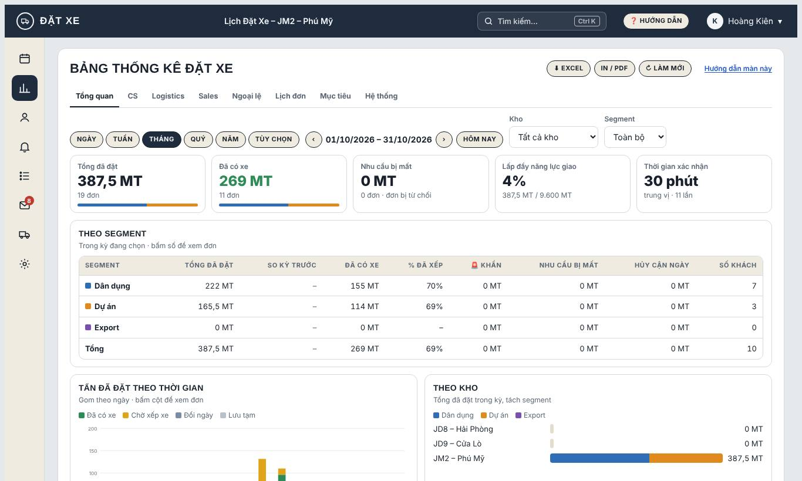
- Tab: Tổng quan · CS · Logistics · Sales · Ngoại lệ · Lịch đơn · Mục tiêu · Hệ thống (mỗi vai trò mở sẵn tab của mình).
- Bộ lọc: Ngày / Tuần / Tháng / Quý / Năm / Tùy chọn, Kho, Segment.
- Bấm vào ô số, cột, thanh, ô bảng → danh sách đơn đúng phần đó; bấm đơn để mở; Quay lại về đúng chỗ.
- ⬇ Excel, In / PDF ở góc trên.
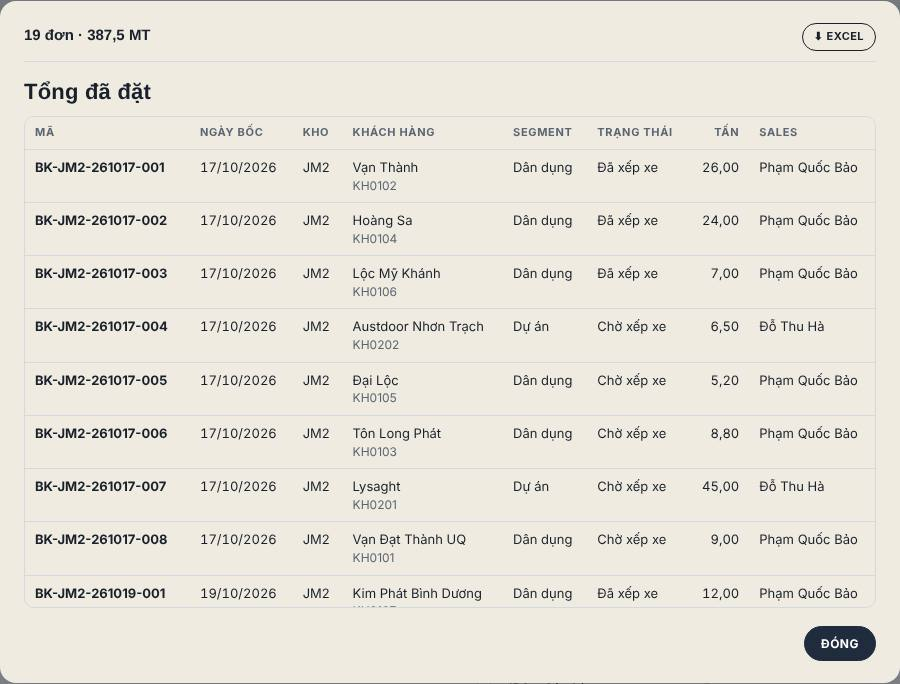
Mục tiêu
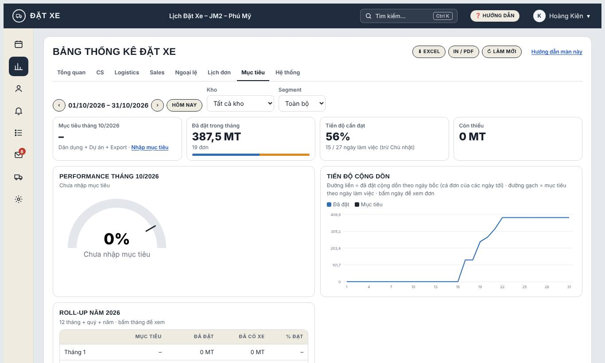
Đồng hồ % đạt và đánh giá tiến độ (Đúng / Hơi chậm / Chậm – so với số ngày làm việc đã qua, trừ Chủ nhật), đường cộng dồn so với mục tiêu, bảng 12 tháng + quý + năm. Admin nhập mục tiêu ở Cấu hình › Mục tiêu (tháng × Dân dụng / Dự án / Export; Country = tổng).
Người dùng và phân quyền
- Người dùng: cấp quyền tài khoản (email, vai trò, segment, kho), khóa / mở, reset 2 lớp.
- Phân quyền: ma trận quyền theo vai trò; bấm để bật / tắt, có nút khôi phục mặc định.
- Tạo hàng loạt tài khoản: dùng file SQL do quản trị chạy trong Supabase (mật khẩu ban đầu chung, mỗi người tự đổi).
Tạo, lọc, xóa tài khoản (chỉ Admin)
- + Tạo tài khoản: nhập họ tên, email hoặc tên ngắn (
hung.phan → hung.phan@bluescope.com), vai trò; mật khẩu tạm tự sinh (📋 copy). Mặc định bắt đổi mật khẩu khi đăng nhập lần đầu; tick Gửi email chào mừng nếu muốn. Mật khẩu chỉ hiện một lần.
- Tạo hàng loạt: dán từ Excel Họ tên | Email | Vai trò | Segment | SĐT | Kho; dòng lỗi tô đỏ; xong tải CSV danh sách mật khẩu tạm.
- Gán vai trò: cho email đã có tài khoản đăng nhập (tạo trong Supabase trước đây).
- 🔑 đặt lại mật khẩu tạm; 🗑 xóa hẳn tài khoản. Tài khoản đang phụ trách khách / booking phải chọn người nhận chuyển giao (hoặc Khóa thay vì xóa). Lịch sử vẫn ghi tên kèm "(đã xóa)". Gõ XOA để xác nhận. Không xóa được chính mình và Admin cuối cùng.
- Bộ lọc: tìm tên / email, Vai trò, Segment, Trạng thái, Chưa đăng nhập bao giờ / không đăng nhập > 30 ngày. Tick ô đầu dòng để xóa nhiều tài khoản test một lần.
RSM (quản lý vùng) xem nhóm Sales
- Mở hồ sơ từng Sales trong nhóm → Quản lý trực tiếp (RSM) = tài khoản RSM.
- Mở hồ sơ RSM (vai trò Sales) → Phạm vi thống kê = Nhóm của tôi (RSM); tick nhận thông báo khi đơn của nhóm bị từ chối / đề nghị đổi ngày nếu muốn.
RSM thấy đầy đủ khách, đơn, yêu cầu đặt hàng của mình và cả nhóm, gửi yêu cầu cho khách của nhóm; Thống kê có ô lọc Sales. Sales trong nhóm vẫn chỉ thấy khách của mình. Kiểm tra ở máy chủ, không chỉ ẩn trên giao diện.
Tạm bỏ bắt buộc picking list (chỉ Admin)
Cấu hình → Ngưỡng & tải trọng → ô CS phải nhập danh sách cuộn trước khi Logistics load hàng. Tắt trong giai đoạn pilot khi CS chưa kịp nhập; mọi lần đổi ghi nhật ký; Admin và Logistics thấy nhãn cam nhắc bật lại.
Khách hàng
Tài khoản khách (và Admin khi Xem như khách) chỉ thấy bộ hướng dẫn riêng cho khách: đăng nhập, đọc lịch, trạng thái đơn, hỏi đáp. Không thấy hướng dẫn nội bộ.
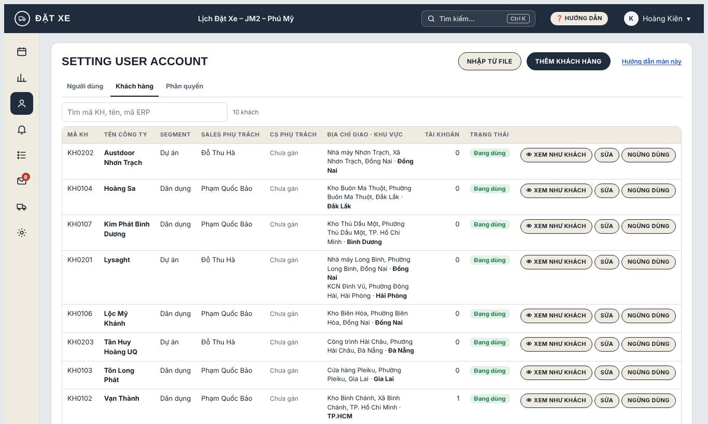
Ô tìm theo mã / tên / mã ERP (hiện tối đa 100 dòng). Mỗi dòng: 👁 Xem như khách, Sửa, Ngừng dùng.
Nhập từ file
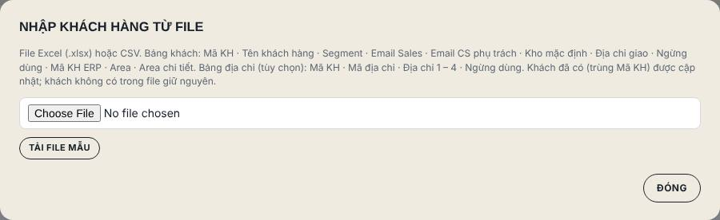
- Bấm Nhập từ file → chọn Excel/CSV (bảng "Khách hàng" và "Địa chỉ giao", hoặc Tải file mẫu).
- Hệ thống kiểm tra trước: số khách mới / cập nhật / lỗi / cảnh báo (Sales, CS chưa có tài khoản; tỉnh chưa nhận ra…).
- Bấm Ghi. Khách trùng mã được cập nhật, khách không có trong file giữ nguyên. Tỉnh tự nhận theo 34 tỉnh mới (cả tên tỉnh cũ).
Cấu hình
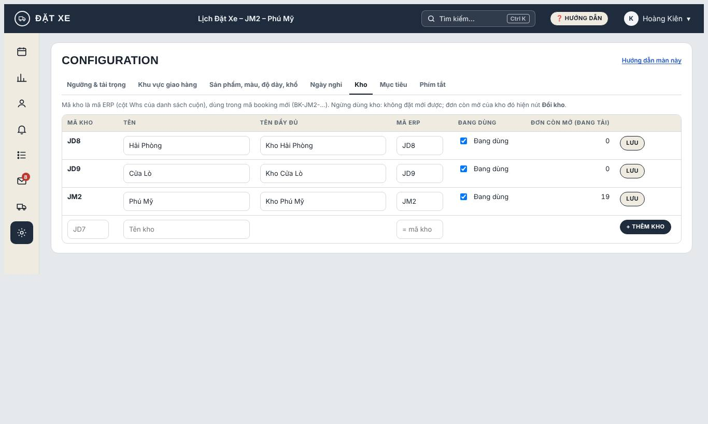
- Ngưỡng & tải trọng: tải trọng DK / XT, ngưỡng gần đầy, giờ chốt, ngưỡng lệch cuộn…
- Khu vực giao hàng: khu vực theo kho, tỉnh tương ứng, khu vực lân cận (gộp xe).
- Ngày nghỉ, Sản phẩm / màu / độ dày / khổ.
- Kho: thêm kho, sửa tên, mã ERP, ngừng dùng.
- Mục tiêu: tấn theo tháng × segment.
- Phím tắt: xem mục Phím tắt.
Login as và Xem như khách hàng
- Login as (người dùng): Người dùng, hoặc Ctrl+K gõ tên → Login as. Thấy và thao tác đúng như người đó; ghi nhật ký là Admin làm thay; tối đa 60 phút.
- Xem như khách hàng: tab Khách hàng → 👁 Xem như khách (hoặc Ctrl+K gõ tên khách). Thấy đúng giao diện khách (lịch "Có thể đặt", đơn của khách, Sales phụ trách) – chỉ xem, mọi thao tác bị khóa, không cần khách có tài khoản.
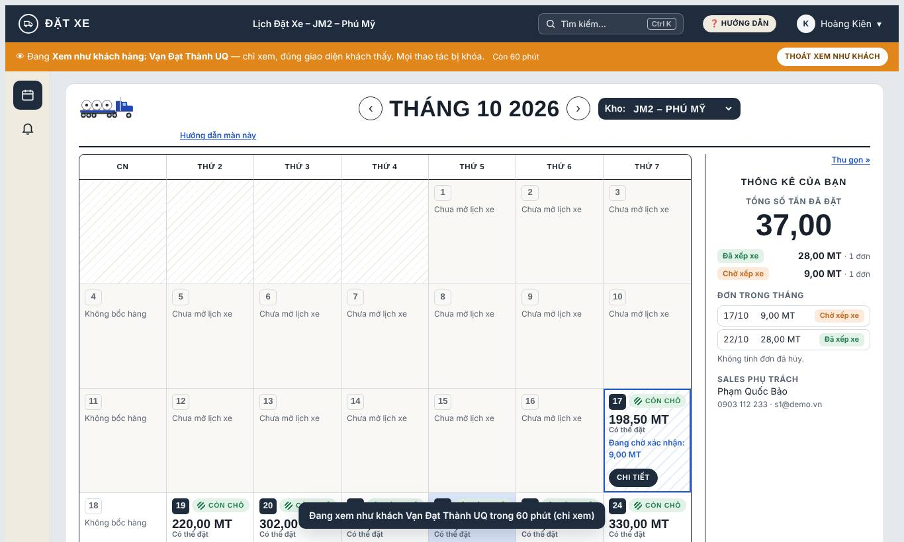
Bấm Thoát xem như khách trên thanh màu cam để quay lại.
Bảo trì
- Mỗi bản cập nhật có nhánh riêng trên GitHub. Chạy
supabase/setup_all.sql của nhánh đó trong Supabase › SQL Editor trước, đợi Success. - Sau đó mới merge vào main; Cloudflare tự deploy. Người dùng tải lại trang (Ctrl+F5).
- Lỗi "Could not find the function …": SQL chưa chạy (hoặc chạy
notify pgrst, 'reload schema';).
Thống kê › Hệ thống: dung lượng, đăng nhập, email, gửi email thử.
Yêu cầu đặt hàng 💬
Khách hoặc Sales ghi nhanh nhu cầu dạng tự do (ví dụ "Anh Ánh đặt 20 MT HC 0.5 Xanh dương, 30 MT Titan"). Yêu cầu chưa giữ chỗ; CS chuyển thành đơn.
- Gửi: Sales / CS bấm + Yêu cầu đặt hàng trên thanh lịch, chọn khách (Sales chỉ thấy khách mình phụ trách), kho, ngày giao (ngày hàng đến khách), ghi nội dung, tổng MT nếu biết. Khách cũng gửi được từ cổng của họ.
- Nhận: CS phụ trách khách (nghỉ → người nhận thay; không có → mọi CS) và Sales phụ trách nhận thông báo 🔔. Ô ngày hiện chip tím 💬 số yêu cầu · MT; nút 💬 Yêu cầu trên thanh lịch ghi số đang chờ.
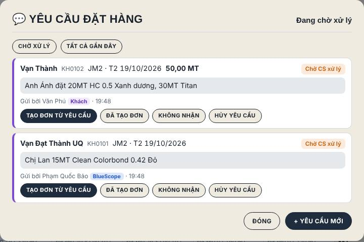
Ngày giao → ngày bốc: hệ thống tự tính ngày bốc dự kiến = ngày giao − số ngày vận chuyển của kho (Admin cài ở Cấu hình → Chung → Số ngày vận chuyển, mặc định 1). Chip 💬 hiện ở ngày bốc dự kiến; trong danh sách yêu cầu CS đổi được ngày bốc (không sau ngày giao).
- Tạo đơn từ yêu cầu: mở lưới đặt hàng điền sẵn khách, kho, ngày, MT, nội dung yêu cầu hiện ở đầu lưới. Đặt xong đóng lưới → hệ thống hỏi Xác nhận đã tạo đơn (mã booking tự điền nếu tìm thấy).
- Đã tạo đơn: đánh dấu khi đã đặt bằng cách khác (ghi mã booking nếu có).
- Không nhận: bắt buộc ghi lý do; người gửi, khách và Sales nhận thông báo.
- Hủy yêu cầu: người gửi hoặc CS, khi chưa xử lý.
Quyền: Gửi yêu cầu đặt hàng (mặc định Sales, CS, Admin) và Xử lý yêu cầu đặt hàng (CS, Admin) trong Phân quyền.
Việc của tôi ✅
Thanh trái → Việc của tôi (phím G V) gom mọi thứ đang chờ bạn: yêu cầu đặt hàng (CS), câu hỏi Trao đổi chờ bạn trả lời, đơn cần xử lý (nháp, đổi ngày, bị từ chối, load thiếu, giao lỗi), đơn chờ xếp xe (Logistics), đơn chưa xác nhận giao. Viền đỏ = quá hạn, cam = sắp quá hạn; chấm đỏ ở thanh trái = số việc quá hạn. Bấm một dòng để mở đúng chỗ xử lý.
Chế độ kho · link tài xế
- Chế độ kho (thanh trái): các xe có hàng hôm nay / ngày mai theo kho, nút to cho điện thoại: Bốc xong, Xe xuất phát, Đã giao từng điểm – mỗi nút mở danh sách kiểm tra như hộp xe.
- 📱 Link cho tài xế (Chế độ kho hoặc hộp xe): gửi link qua Zalo / SMS. Tài xế không cần tài khoản: bấm Bắt đầu chạy (các đơn đã bốc → Đang giao), rồi ở từng điểm Đã giao (chụp ảnh biên nhận, không bắt buộc) hoặc Không giao được (bắt buộc lý do). CS, Sales, khách, Logistics nhận thông báo ngay; nhật ký ghi "Tài xế xe …".
- Link hết hạn hết ngày hôm sau của ngày bốc; bấm Thu hồi link nếu gửi nhầm. Ai có link đều xác nhận được cho xe đó – chỉ gửi đúng tài xế.
- Ảnh biên nhận: chi tiết booking → 📷 Ảnh giao hàng.
Trao đổi nội bộ 💬
Hỏi đáp giữa CS, Sales, Logistics, Admin gắn với đơn, xe hoặc ngày-kho. Nền vàng, nhãn 🔒 Nội bộ: khách hàng không bao giờ thấy.
- Mở: chi tiết booking → nút 💬 Trao đổi; hộp thoại xe → 💬 Trao đổi; màn đội xe → 💬 Trao đổi ngày; thẻ đơn / xe có chip 💬 khi đã có tin (cam ❓ = đang chờ bạn trả lời).
- Hỏi nhanh: bấm câu mẫu (đổi theo trạng thái đơn) là gửi luôn. Logistics có câu trả lời nhanh khi được hỏi.
- Gọi đúng người: gõ @ rồi chọn @Log JM2, @CS, @Sales, @Admin hoặc tên người. Không @ ai thì hệ thống báo những người liên quan (CS, Sales của khách, Logistics kho). Người nghỉ → người nhận thay.
- Trạng thái: câu có "?" hoặc có @ là câu hỏi → Chờ trả lời; người được hỏi trả lời hoặc thả 👍 / ✅ → Đã trả lời; bấm ✓ Xong khi giải quyết xong.
- Nhắc: quá N giờ (Cấu hình → Chung, mặc định 2) chưa ai trả lời → nhắc người được hỏi; quá 2N giờ → báo trưởng nhóm và Admin. Email tóm tắt có mục câu hỏi đang chờ bạn.
- Hộp Trao đổi (thanh trái, phím G M): Cần tôi trả lời / Tôi đã hỏi / Đang theo / Tất cả, lọc theo kho.
- Ghim ghi chú (📌) hiện ở đầu đơn, trên thẻ đơn và thẻ xe ở màn đội xe; ghi vào lịch sử đơn.
- Ảnh: 📷 hoặc dán ảnh (Ctrl+V); ảnh tự nén. Sửa / xóa tin của mình trong 5 phút (ghi nhật ký). Đã xem hiện dưới tin cuối của bạn.
- Theo dõi: 🔔+ theo dõi để nhận mọi tin; 🔕 tắt (vẫn nhận khi được @ tên). Mã đơn / xe trong tin tự thành link.
- Thông báo trên máy: Hộp Trao đổi → Bật thông báo trên máy; khi ứng dụng đang mở ở tab khác hoặc chạy nền (đã cài lên điện thoại / máy tính) sẽ hiện thông báo, bấm vào mở đúng trao đổi.
- Trợ lý: hỏi "có ai hỏi tôi không", "tóm tắt trao đổi đơn BK-…", "hỏi Log xe đơn BK-… đến mấy giờ" (trợ lý chỉ soạn sẵn, bạn tự bấm Gửi). Bấm ra ngoài khung trợ lý thì nó tự thu gọn.
Copy tin cho khách · Tổng quan khách
- Chi tiết booking → 📋 Copy tin cho khách: tạo sẵn đoạn tình trạng đơn (hàng, ngày bốc, trạng thái, xe, biển số, tài xế, giờ dự kiến / giờ giao) để dán vào Zalo / SMS.
- 👤 Tổng quan khách: số MT đặt / giao / bị từ chối 6 tháng gần nhất, lý do bị từ chối, đơn gần đây, yêu cầu và câu hỏi đang chờ.
- Email tổng kết tuần (thứ Hai 7:10): Sales nhận số của mình, RSM nhận số từng Sales trong nhóm (đặt, đã giao, bị từ chối).
Cài lên điện thoại · mất mạng · phiên bản mới
- Cài: bấm tên của bạn (góc trên phải) → 📲 Cài lên điện thoại. Android / máy tính Chrome, Edge: bấm là cài. iPhone: làm theo 3 bước hiện ra (phải mở bằng Safari → Chia sẻ → Thêm vào MH chính). Đã cài rồi thì nút tự ẩn. Lần đầu mở trên điện thoại có dải nhắc phía dưới, bấm Để sau thì 14 ngày không nhắc.
- Mất mạng: vẫn xem lịch lần tải gần nhất, thanh cam báo giờ dữ liệu; mọi thao tác bị khóa đến khi có mạng. Đăng xuất sẽ xóa dữ liệu lưu trên máy.
- Bản mới: góc dưới hiện "Đã có phiên bản mới" → Tải lại (đang nhập dở thì lưu trước). Không cần Ctrl+F5.
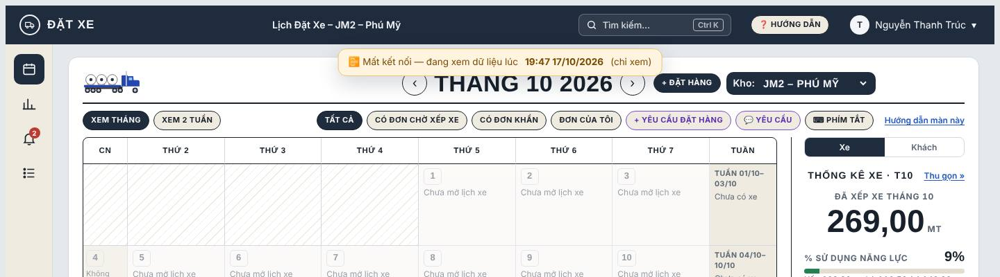
Trợ lý (chatbot) 💬
Nút tròn 💬 góc dưới phải (phím G Q). Hỏi bằng tiếng Việt tự nhiên; trợ lý tra dữ liệu bằng chính tài khoản của bạn nên chỉ thấy đúng phạm vi quyền của bạn.
- Tra cứu: "Thứ 5 này JM2 còn đặt được bao nhiêu?", "Đơn của Vạn Thành tháng này?", "Đơn chờ xếp xe lâu nhất", "Cách xác nhận giao hàng?".
- Logistics: "Xe nào mai còn trống trên 10 MT ở JM2?", "DK-03 hôm nay chở gì?", "Xe nào đang giao chưa xác nhận?", "Gợi ý xe cho BK-…" (giải thích lý do + mở màn đội xe với viền gợi ý → bấm Đồng ý), "Gợi ý xếp tất cả đơn ngày mai".
- Điền form: "Ghi yêu cầu cho anh Ánh KH0102 20 MT HC 0.5 xanh dương, 30 MT Titan, 25/10 JM2" → mở form điền sẵn; CS: "Đặt hàng 12 MT cho KH0102 ngày mai" → mở lưới đặt hàng. Trợ lý không tự gửi / lưu: bạn kiểm tra rồi bấm nút.
- Số liệu tổng hợp ("tháng này đặt bao nhiêu", "đã giao / còn phải giao bao nhiêu", theo khách / Sales / kho / segment) tính cùng nguồn và cách tính với Thống kê, luôn ghi rõ kỳ và có link Xem trên Thống kê để đối chiếu. "Còn phải giao" = đơn đã có xe nhưng chưa giao.
- Link trong câu trả lời (booking, ngày, xe, mục hướng dẫn) bấm để mở. Mỗi người có hạn mức lượt / ngày (Admin chỉnh). Trợ lý có thể sai: kiểm tra trước khi thao tác.
- Admin: Cấu hình → Ngưỡng & tải trọng → khung Trợ lý: bật/tắt, vai trò được dùng, số lượt / ngày, mức dùng. Bật cho khách: Người dùng → Khách hàng → nút 💬 Bật trợ lý từng công ty.
Phím tắt
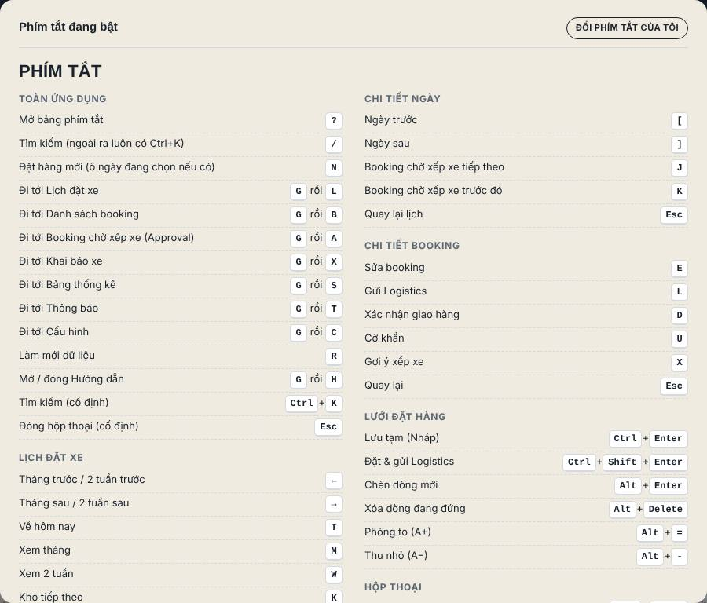
- Bấm ? để xem bảng phím tắt đang dùng. Phím một chữ chỉ chạy khi không gõ trong ô.
- Chuỗi 2 phím: nhấn G rồi chữ thứ hai trong 1 giây (G L Lịch, G B Danh sách, G A Chờ xếp xe, G X Khai báo xe, G S Thống kê, G T Thông báo, G C Cấu hình, G H Hướng dẫn).
- B B quay lại màn hình trước, B N đi tới màn hình vừa rời (giống nút Back / Forward của trình duyệt; Alt+← / Alt+→ cũng dùng được). Nhớ tối đa 20 màn hình.
- Trong lưới / hộp thoại: Ctrl+Enter lưu, Ctrl+Shift+Enter đặt & gửi, Alt+Enter thêm dòng, Esc đóng.
Đổi phím của bạn
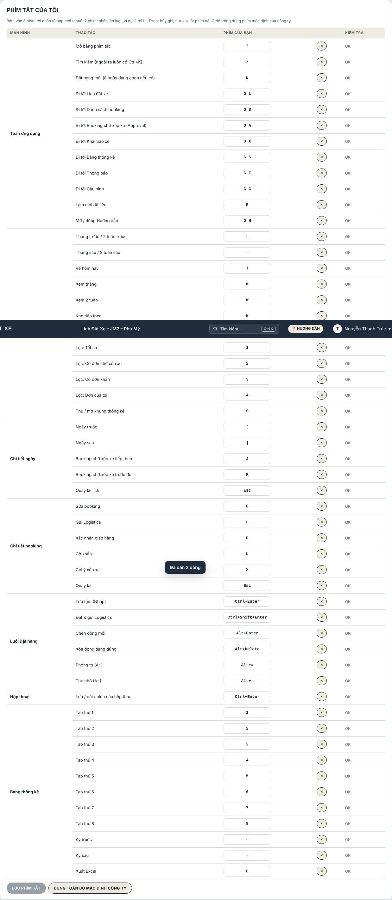
Hồ sơ › Phím tắt của tôi: bấm ô rồi nhấn phím mới. Hệ thống chặn phím của trình duyệt / Windows / Unikey và phím trùng; cảnh báo phím hay dùng ở Teams, Zalo, Excel. Admin đặt mặc định công ty và reset ở Cấu hình › Phím tắt.
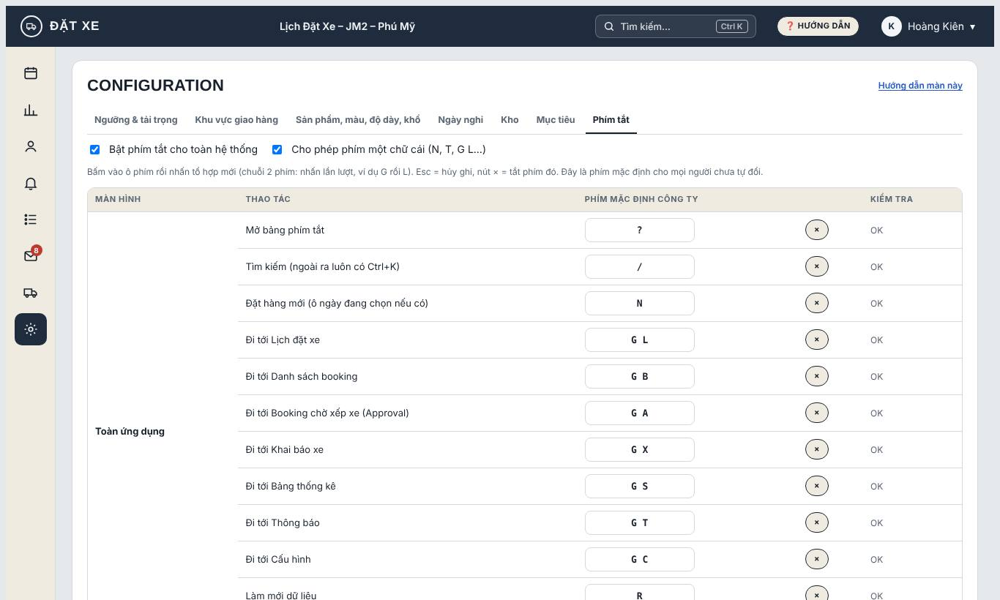
Màu và nhãn
- Thanh năng lực ngày: xanh còn chỗ · cam gần đầy (≥ ngưỡng) · đỏ đầy.
- Xe: đầu kéo 3 cuộn tôn, xe thùng tô thùng theo % tải; trắng = trống, xanh < 80%, cam 80–99%, đỏ 100%, đỏ đậm vượt tải, xám 🔒 đã đóng.
- 🚨 đơn khẩn · ⏳ đơn chờ xếp xe · ⚠ giao ngày nghỉ.
Gặp sự cố
- Không đăng nhập được: kiểm tra tên / mật khẩu, dùng "Quên mật khẩu?". Tài khoản bị khóa → báo Admin.
- Số liệu chưa cập nhật: bấm Làm mới (R) hoặc tải lại trang.
- "Đơn … vừa được X cập nhật": người khác vừa sửa – xem bản mới rồi làm lại.
- Không đặt được vào ngày: ngày chưa khai báo xe, đã đầy, hoặc kho ngừng dùng.
- Phím tắt không chạy: con trỏ đang ở ô nhập liệu / hộp thoại đang mở; hoặc phím đã bị đổi (xem bảng ?).
Khách hàng
Hàng nút trên lịch để chọn kho: Tất cả kho (mặc định) hoặc từng kho; kho bạn hay đặt đứng đầu, số nhỏ cạnh tên là số đơn trong tháng. Trình duyệt nhớ lựa chọn lần trước.
- Tất cả kho: mỗi ô ngày ghi số MT còn đặt được của từng kho (gạch ngang = đã đầy) và huy hiệu 📦 cho đơn của bạn theo kho: xanh lá đã xếp xe, xanh dương chờ xếp xe, đỏ từ chối, cam đề nghị đổi ngày. Bấm ô để xem đơn của mọi kho trong ngày.
- Một kho: ô ngày ghi số MT có thể đặt, Bạn đã đặt, Đang chờ xác nhận; bấm Chi tiết để xem đơn.
- Khung Đơn của tôi bên phải: số đơn chờ xếp xe, đã xếp xe, tổng MT tháng; danh sách đơn 14 ngày tới kèm kho và trạng thái; Sales phụ trách.
- Muốn đặt thêm hoặc đổi lịch: liên hệ Sales phụ trách.